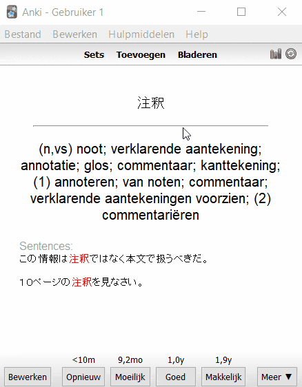
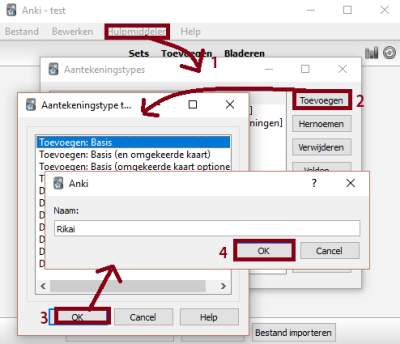
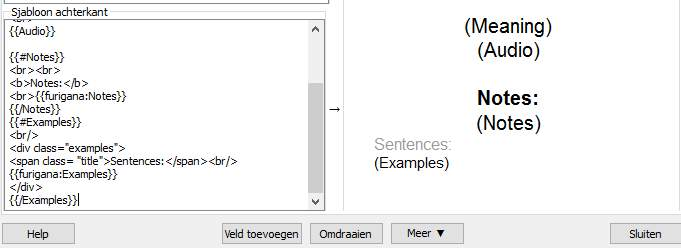
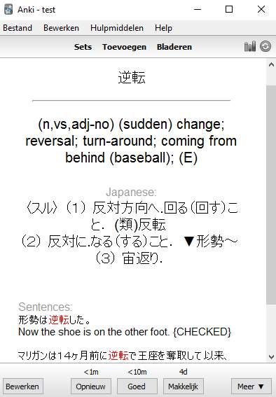

As an undergraduate student I wrote several blog-posts and tutorials throughout 2016 on how I’ve personally integrated Anki in my daily life. One of those entries extensively documented how to connect Anki with Firefox to vocab-mine Japanese texts in my browser with JPod101 audio-readings, example-sentences and Japanese dictionary definitions; posts that became somewhat high-ranking when looking up all things Anki. The Anki-integrated Firefox pop-up dictionary Rikaisama has since then becoming obsolete, and I have since mostly relied on Yomichan instead. Hence this periodically updated guide.2
So it’s 20XX, wasting valuable time on automatable processes bores you and you’re keen on integrating technology more efficiently in your Japanese language-acquisition. Concretely you want to:
- Vocab-mine Japanese texts you’re reading both on- and off-line using Chrome or Firefox.
- Improve your retention-rate with hover-able furigana reading-aids and crystal-clear audio-readings.
- Contextualize your cards with Japanese example sentences.
- Rely not just solely on foreign-language translations, but use Japanese dictionary definitions for optimized studying.
Basically, you want cards like this:

What options are available then, sans going all the way and developing said tools yourself?
- If you’ve previously used the Rikaisama pop-up dictionary and followed my previous guides, you can continue doing so using a Firefox-derived browser. I still recommend this method for longer texts such as novels. Head to section Rikaisama.
- If you’re new to this site or method, use the Chrome / Firefox add-on Yomichan. It’s user-friendly, highly adjustable and has tons of features. Head to section Yomichan.
Yomichan
Developed by Foosoft Productions - a household name amongst the Anki-utilizing online learning community - Yomichan originated as a stand-alone book-reader with Anki-integration,3 until it in its current form became the most complete Rikaisama alternative.
Similarly to Rikaisama, we’ll use Yomichan to vocab-mine Japanese texts and generate extensive Anki-cards with Jpod101 audio-readings, example sentences, furigana, and Japanese definitions. Furthermore, for ex-Rikaisama users, Yomichan definitely has the upper hand concerning user-friendliness and adaptability.
Set-up
Another benefit of this plug-in is that it’s cross-platform, available both on Firefox and Chrome. Pick your platform of choice and after installing we’ll start the initial set-up.
It’s worth checking out Yomichan’s homepage as it contains an extensive manual. This guide will focus purely on connecting Yomichan to Anki, setting up a proper template for our cards, and facilitate generating example sentences and Japanese definitions.
Note
Yomichan can’t parse offline files out-of-the-box. If you’re inclined to use Yomichan with offline files (when reading HTML-formatted novels for example), just head to the Chrome/Firefox settings → extensions page and manually allow the add-on to access file URLs.
Dictionaries
First, download your preferred dictionaries and add them in your browser’s Yomichan settings page.
Integrating Anki
To integrate Yomichan into Anki, we’ll need to install Anki-Connect, an Anki plug-in specifically tailored to Yomichan. Open Anki on your desktop, go to Tools → Add-ons → Browse & Install, and copy-paste 2055492159 in the pop-up dialog.
Now, we’ll create a new set to contain our Yomichan-powered cards. We want cards containing the expression (and hover-able furigana reading), its definition in our language of choice, audio readings and example sentences. For this, we’ll create a new ‘note-type’ with fields corresponding to the info we’d like to see in our cards. We probably want to be tested both on the Japanese expression (visual recognition), on its meaning (production) and finally on the audio (oral recognition). To achieve this, we’ll add three ‘card-types’ to our ‘note-type’.
Start by creating a new ‘set’, e.g. yomi-vocab. On Windows, press Ctrl+Shift+N, or click Tools → Manage Note Types, to enter the ‘note-type’ management screen. Select Add: Basic (and reversed card) and click add → ok to create a new ‘note-type’. Call it Yomichan.

Next, we’ll be customizing this note-type to better suit our study-method. Select the new Yomichan ‘note-type’ and click Fields. We’ll rename the current front and backside as Expression and Meaning, and add three new ‘fields’ Audio, Examples and Notes (that latter one could be used for personal notes).
Close this screen and select Cards. We’ll manage the different cards this note generates as well as its make-up. We’ll start with a basic layout. In the template section of this screen, click on the Styling radio button and add the following lines of CSS to the bottom. For optimal learning, we’ll keep furigana kana-readings displayed only touch/hover. This way learners are less likely to use them as a crutch.
1 2 | |
Currently we’ll have two card types: Card 1: Expression → Meaning (e.g. recognition of vocabulary) and Card 2: Meaning → Expression (e.g. production and active recalling). Each card will question you on one field (the Japanese expression or the English translation) and show the answer on the backside along with audio and any potential notes.
Click Options and select Rename Card Type to rename both cards to respectively Recognition and Production. Now let’s edit the actual template of each Card Type’s front and back template to look as follows:
Card 1: Expression → Meaning
- Front Template
1 | |
- Back Template
1 2 3 4 5 6 7 8 9 10 11 12 13 | |
Production
- Front Template
1 | |
- Back Template
1 2 3 4 5 6 7 8 9 10 11 12 | |
We’ll also want to test our listening comprehension. Thus, click Options and select Add Card Type. Let’s rename it to Audio and edit the template as follows:
Audio
- Front Template
1 | |
- Back Template
1 2 3 4 5 6 7 8 9 10 11 12 | |
Mapping
Save when finished, but don’t close Anki just yet. Our final step for now will be to map our Firefox or Chrome Yomichan settings to Anki so that our generated cards will be using the correct card-template and imported data gets saved to within correct set.
Open the Yomichan options on your browser of choice; scroll down to the ‘Anki category, and turn on Enable Anki integration. I further suggest to change Duplicate card scope to Deck.
Select Configure Anki card format.. and change accordingly: Deck → Yomichan, Model → yomichan, Field Expression → {furigana-plain}, Meaning → {glossary-brief}, Audio → {audio}.
Testing
Now let’s try out our new set-up!
Note
Anki has to remain open whenever we vocab-mine using Yomichan, so just keep Anki opened in the background for now.
Press and hold Ctrl (or whatever Scan modifier key you selected) and hover over the words below. A yomichan pop-up should appear.
理解 |暗記 (I’m not obsessed, I swear~)
Just press the green Add Expression icon on the pop-up or use the key short-cut Alt+E to import these words into your set.
I’ve exported my own copy of this example and uploaded if you want to compare or save yourself the work of creating the note template manually:
- Download: Example set Yomichan
Japanese Example Sentences
Our current set-up is pretty useful already, but as seen in the GIF at the top of the page, some further effort will allow us to add proper example sentences and their translations to our mined vocabulary on-the-fly. For this, we’ll be using an Anki add-on called Japanese Example Sentences, which relies on what is known as the Tanaka Corpus, a massive corpus of parallel Japanese-English sentences compiled by Prof. Dr. Yasuhito Tanaka and his students. It is since being maintained by the Tatoeba Project, as formatted by Prof. Dr. Jim Breen.
Download
The Japanese Example Sentences add-on has a page on Ankiweb’s plug-in page, but as usual we’ll install the plug-in using the Desktop Anki application. Go to Tools → Add-ons → Browse & Install, and copy-paste 2413435972 in the pop-up dialog. Restart the application to complete the installation.
Note
The example sentences database provided with the plug-in uses a very outdated (2012) copy of the Tanaka Corpus. A regularly maintained copy in a compatible format can be download from the WWWJDIC web-page (direct link to the UTF-8 variant).
- Download the above UTF-8 copy of the corpus, and extract it in the Japanese Examples Anki add-on folder. Rename the extracted file japanese_examples.utf.
- Restart Anki. The Japanese Examples add-on will recompile a pickle serialized variant of the corpus for speed efficiency in looking up sentences.
Set-up with Anki-connect + Yomichan
Next, select Tools → Add-ons, select → Ctrl+Shift+A, click on Japanese Example Sentences → Config. We’ll want to change the "noteTypes" field from "example-sentences" to "Yomichan", the name of our new note-type. Click ok and and press View Files in the add-ons screen to open the Japanese Example Sentence add-on folder within your local AppData’s Anki folder. We’ll have to open config.json with a text-editor and make the exact same change again (e.g. change "noteTypes": ["example_sentences"] to "noteTypes": ["Yomichan"]).
In its current stage, this plug-in can contextualize existing cards using Edit → Bulk-add examples. There are two requirements so-far: the ‘note-type’ should have both an examples field and expression field, and the expression should be just the Japanese expression without [square brackets] containing furigana.
However, because we want furigana readings on our vocab, our Yomichan + Anki method does rely on importing expression fields containing brackets (e.g. 気象庁[きしょうちょう]). In order to facilitate contextualizing cards generated using Yomichan, then, we will need to make a few adjustments to both Anki-Connect and the Japanese_Examples add-on.
Note
I’ve added the edited files on a new repository on my GitHub so go ahead and replace the existing add-on files on your Anki’s add-on folder on your computer (e.g. C:\Users\USER_NAME\Documents\Anki\addons or C:\Users\USER_NAME\AppData\Roaming\Anki2\addons21). I’ve described all my edits below in case you’d prefer to do this manually.
Japanese Example Sentences: japanese_examples.py
1 2 3 | |
Open japanese_examples.py and paste the above piece of code in the find_examples class right after it defined examples as a list. it should be around line 124 (def find_examples(expression, maxitems): examples = []). While you’re here, replace " {CHECKED}" with "✓" (e.g. example = example + " ✓"). It’s more a e s t h e t i c.
Next, I’ve edited the mark-up of the example sentences to hide the English translations unless hovered above (or selected on touch-screens). Locate combined_examples = ["%s<br>%s" % x for x in examples] in the find_examples_multiple method (around line 204) and replace it with the following line:
1 | |
Finally, In the find_examples_multiple method (around line 212), replace “<br><br>” with “<br>”; we’ll want just one break between example sentences.
Anki-Connect: __init__.py
Note
This step is only necessary if you’d prefer example sentences to be added directly upon adding a new card with Yomichan. Another solution would be to just periodically select all cards in your deck with the Card Browser and click Edit → Bulk-add Examples.
Anki-Connect makes calls to Anki’s API to create new notes. My edit adds a call to the japanese_examples add-on at run-time. First, we’ll have to import the japanese_examples extension to be able to call its methods. If you’re doing this set-up manually, add the line below near the top of the __init__.py file, below the other imports (around line 48).
1 2 3 4 5 6 7 | |
Next, I’ve written a few lines in the addNote method to call Japanese-examples’ find method at run-time. This should come before collection = self.collection() around line 500.
1 2 3 4 5 6 | |
Finally, we want to alter out cards’ lay-out to display our example sentences in a educationally beneficial manner. We’ll need some further edits outlined below.
- Back Template
Add the HTML code below to the bottom of your three card-types’ back templates.
1 2 3 4 5 6 7 8 | |
Card Lay-out
Add the code below to the bottom of the Template’s Styling tab. It’ll display the example sentences to the left of your cards.
1 2 3 4 5 | |

If you’ve followed the above steps, your Yomichan-generated Anki cards should now contain example sentences as well.
Try it out yourself:
文脈 |語彙 !
Example Set
As usual, I’ve exported my own copy of this tutorial and uploaded it in case you’d like to compare or save yourself the work of editing the note template yourself.
- Download: Example set Yomichan
Weblio Japanese Definitions
Support for online monolingual dictionary definitions is a feature often requested of Yomichan. Right now, Japanese EPWING dictionaries are supported out-of-box, but those are propriety software and thus not provided freely online. Furthermore, the author has expressed some reluctance to adding support for online dictionaries due to the instable nature of accessing definitions through web-scraping. The slightest update to the structure of an on-line dictionary would render the feature unusable.
That being said, that is exactly what this Anki add-on does: Japanese Definition Scraper from weblio Dictionary does.5
As usual we’ll install the plug-in using the Desktop Anki application. Go to Tools → Add-ons → Browse & Install, and copy-paste 2055037404 in the pop-up dialog. Restart the application to complete the installation.

Set-up
The ‘note-types’ of the vocabulary you want Japanese definitions for will need a new field to contain the definition. On the desktop Anki application, press Ctrl+Shift+N, or click Tools → Manage Note Types, to enter the ‘note-type’ management screen. Select the ‘note-type’ of the cards you’d like to contain example sentences and click fields. On the next screen, click add and call the field JapaneseDefinitions.
Next, select Tools → Add-ons, select → Ctrl+Shift+A, click on Definition Scraper → Config. We’ll want to change the "definitionField" field to "JapaneseDefinitions" and the "expressionField" field to "Expression". Click ok and and press View Files in the add-ons screen to open the add-on’s folder within your local AppData’s Anki folder. We’ll have to open config.json with a text-editor and make the exact same change again.
Yomichan / Anki-Connect Compatibility
As with the previous section on example sentences, a drawback to this plug-in when used in combination with our set-up is that it does not support vocabulary formatted to use furigana, and neither can Japanese definitions be added automatically on adding new cards with Yomichan. We’ll have to make some further adjustments.
Note
I’ve added the edited files on a new repository on my GitHub so go ahead and replace the existing add-on files on your Anki’s add-on folder on your computer (e.g. C:\Users\YOUR_NAME\Documents\Anki\addons) with the ones on there.
Weblio Japanese Definitions: __init__.py
If you’d like to edit this yourself, add the following code as first line in the fetchDef class - it should be around line 42 (def fetchDef(term):).
1 2 3 | |
Anki-Connect: __init__.py
Note
Like before, this step is only necessary if you’d prefer Japanese dictionary definitions to be added immediately upon card generation with Yomichan. Another solution would be to just periodically select all cards in your deck (Ctrl+A) with the Card Browser and click Edit → Regenerate Japanese Expressions. It will crawl the Internet for each new definition so this might take quite a while. Speed optimization might be exactly why to skip this part and just bulk generate though.
This process will be almost identical to that done for the Example Sentences add-on. First, we need to import the Weblio add-on in the Anki-Connect python script. Add the code below near the top along the other imports (around line 50).
1 2 3 4 5 6 7 | |
Next, we’ll make a call to Weblio Japanese Definitions in Anki-Connect’s
addNote method to webscrape Weblio’s dictionary at run-time and, if a definition was found, add those to our card. Again this should come before collection = self.collection() around line 500.
1 2 3 4 5 6 | |
If you’ve followed above steps, every time you add a new word with Yomichan, it will automatically contain a Weblio dictionary definition as well. Try it out yourself:
Anki Note Lay-out
Finally, let’s edit the lay-out of our cards (open ‘note-type’ management screen) in order to display our Japanese definitions (if any).
Lay-out
As usual, add the following CSS code to the bottom style screen of your note’s ‘card-type’ template.
1 | |
Templates
Add the following code below the line displaying your vocab expression’s definition (e.g. {{Meaning}}). You’ll do this in Expression → Back Template, Meaning → Front Template and Audio → Back Template.
1 2 3 4 5 6 7 | |
Download Example Set
As usual, I’ve exported my own Anki copy of this tutorial and uploaded it in case you’d like to compare or save yourself the work of editing the note template yourself. This one follow up on the last parts of the guide and is identical to the template I’m using myself.
Download: Example set Weblio
Applications
I’ve covered several ways of using these tools back in 2016. Rikaisama and Yomichan cover any format that displays actual Japanese text on your browser. This goes from reading news-articles, social media or HTML-formatted novels (I personally use this method to read Kindle-bought literature), but also HTML5 video-games, or viewing anime on Animelon’s multi-layer subtitled streaming web-app (no affiliation, it’s free and I just think it’s a pretty cool service).
Rikaisama
Rikaisama is dead, long live Rikaisama!
While Firefox broke support of (unsigned) XUL-based add-ons and thus Rikaisama, further usage is still possible through XUL-supporting Firefox-derivatives such as Waterfox, Pale Moon and Basilisk.4
For day-to-day practices, installing an additional browser seems like an unnecessary bloated approach, but despite its wonderful successor, I’m still quite partial to Rikaisama solely for reading longer texts such as Japanese novels, since Rikaisama’s one-button solution to importing cards into Anki is frankly just more time-efficient as Yomichan. Finally, if you’ve already painstakingly gone through my previous tutorials, this method will require the least amount of additional effort.
Set-up
All this step requires is downloading one of those Firefox-derivatives and following my prior guides (I’ve gone through them again while setting up Waterfox and they’re still applicable). Personally, I use Yomichan with Chrome on a day-to-day basis, and Rikaisama in combination with Waterfox while reading large texts.
As for the previous guides on Rikaisama, I’ve added links in the next section.
Wait! There is more!
Although I’ve extensively covered Anki/browser-integration in my 2016 blog series, Rikaisama’s status as legacy software rendered some of my previous writings rather obsolete and it was thus high time for an update. While I’m still keen on Rikaisama using Firefox-alternative Waterfox in certain situations (namely, handling large texts such as novels), I’ve switched to using Yomichan for day-to-day situations. I’ve slightly updated my previous posts for those interested. If you’ve any further questions, feel free to check out the other articles in this series on Anki, or to leave a comment below.
- A
QuickGuide on Using Anki (effectively) (in an academic context) Setting up a perfect vocab-mining environment with Anki and Rikaisama - Using Anki’s API to contextualize your vocab cards with example sentences
- Making the switch: J-J definitions in your vocab cards
-
Image taken from the 2012 Japanese animated film Wolf Children by Mamoru Hosoda, used under Fair Use doctrine. ↩
-
2021 update: I’ll never stop actively learning Japanese and still rely on Anki and the methods outlined below as of writing, but now that the language became part of my ‘professional’ life (😏), the extent to which I encounter new vocabulary has somewhat decreased over the years. In turn so has my interest in finding and integrating new study methods. Migaku (whose developers seem to run a successful Patreon) appears to be quite useful and would work well in conjunction with this tutorial, but it might be a while before I look further into that. ↩
-
Granted, the offline Yomichan-application that predated the current Yomichan Chrome plug-in covered most of these bases, but in my opinion reading novels on Yomichan was less as ideal and the project has been rendered obsolete since development of the Chrome plug-in took off. ↩
-
It must be said that there’s benefits and downfalls to each of those derivatives and I don’t specifically recommend you to replace your current browser with one of these unless you know what you’re doing. ↩
-
Before this, I used a sanseido webscraper add-on, but as of September 30, 2020, Sanseido stopped their web dictionary service. This weblio scraper turns out to be based on my Japan - Korean add-on which itself was based on the Sanseido scraper. Funny how things go around. ↩